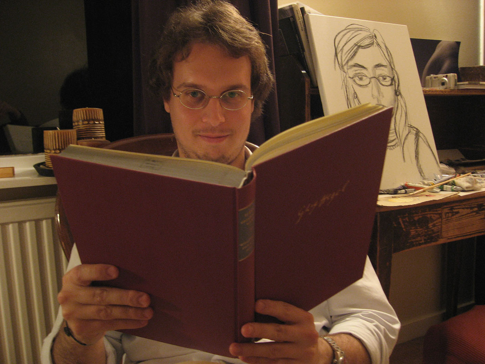

Elia Zardini
Welcome
I’m currently spending at LanCog (University of Lisbon) a mid-career FCT Fellowship. I have received my PhD in 2008 from the University of St Andrews and have since then held postdoctoral research positions at Arché (University of St Andrews), NIP (University of Aberdeen) and the Institute of Philosophical Investigations (UNAM), plus a Marie Skłodowska-Curie Intra-European Fellowship at LOGOS (University of Barcelona). I’m currently editor-in-chief (with Ricardo Santos) of Disputatio.
For the next few years, my main focus will be on the applications of certain non-transitive or non-contractive logics and of their philosophical underpinnings in notions like tolerance and instability (which I’ve originally developed to deal with the paradoxes of vagueness and the semantic paradoxes respectively) to some long-standing problems in epistemology, metaphysics and philosophy of mathematics. I’m also pursuing other research interests of mine in epistemology (a priori justification, logic of knowability, knowledge-how) and philosophy of logic (inferentialism, logical pluralism).
